Reading Comprehension Worksheets – 9th Grade
1564 Reading Comprehension Worksheets resources for 9th Grade, ready to print: Sojabohne, Software, Sofia, Sodio and more. Each resource page shows the grade range, page count and a preview and links straight to the product on TpT.
1,564 resources
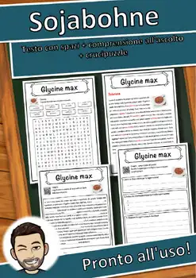
Sojabohne – Italian Reading Comprehension Worksheet (Scheda): Cloze & Listening
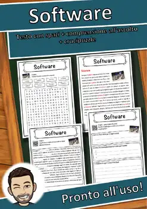
Software – Italian Reading Comprehension Worksheet (Scheda): Cloze & Listening
Sofia – Italian Reading Comprehension Worksheet (Scheda): Cloze & Listening
Sodio – Italian Reading Comprehension Worksheet (Scheda): Cloze & Listening

Socialismo – Italian Reading Comprehension Worksheet (Scheda): Cloze & Listening
Smartphone – Italian Reading Comprehension Worksheet (Scheda): Cloze & Listening
Slovenia – Italian Reading Comprehension Worksheet (Scheda): Cloze & Listening
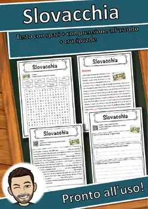
Slovacchia – Italian Reading Comprehension Worksheet (Scheda): Cloze & Listening
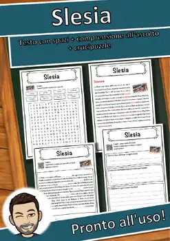
Slesia – Italian Reading Comprehension Worksheet (Scheda): Cloze & Listening
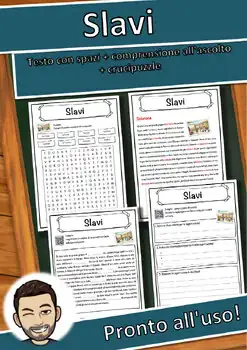
Slavi – Italian Reading Comprehension Worksheet (Scheda): Cloze & Listening
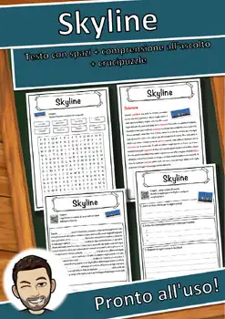
Skyline – Italian Reading Comprehension Worksheet (Scheda): Cloze & Listening
Skopje – Italian Reading Comprehension Worksheet (Scheda): Cloze & Listening
Skelett – Italian Reading Comprehension Worksheet (Scheda): Cloze & Listening
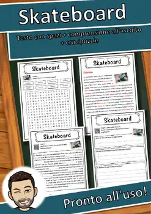
Skateboard – Italian Reading Comprehension Worksheet (Scheda): Cloze & Listening

Siviglia – Italian Reading Comprehension Worksheet (Scheda): Cloze & Listening
Sigillo – Italian Reading Comprehension Worksheet (Scheda): Cloze & Listening
Scorpiones – Italian Reading Comprehension Worksheet (Scheda): Cloze & Listening
Siria – Italian Reading Comprehension Worksheet (Scheda): Cloze & Listening
Sioux – Italian Reading Comprehension Worksheet (Scheda): Cloze & Listening
Singhiozzo – Italian Reading Comprehension Worksheet (Scheda): Cloze & Listening
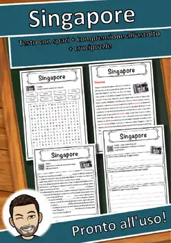
Singapore – Italian Reading Comprehension Worksheet (Scheda): Cloze & Listening
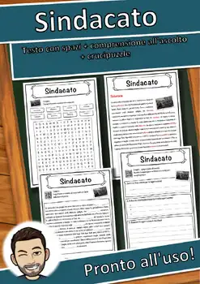
Sindacato – Italian Reading Comprehension Worksheet (Scheda): Cloze & Listening
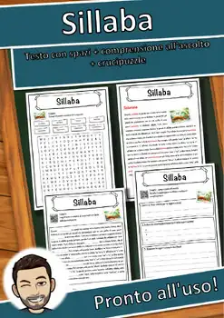
Sillaba – Italian Reading Comprehension Worksheet (Scheda): Cloze & Listening
Silicio – Italian Reading Comprehension Worksheet (Scheda): Cloze & Listening
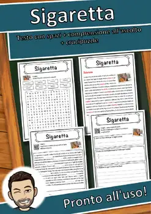
Sigaretta – Italian Reading Comprehension Worksheet (Scheda): Cloze & Listening
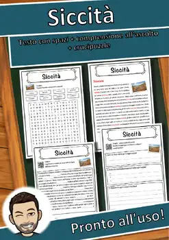
Siccità – Italian Reading Comprehension Worksheet (Scheda): Cloze & Listening
Sibirien – Italian Reading Comprehension Worksheet (Scheda): Cloze & Listening
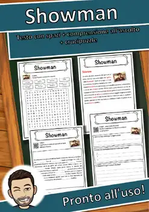
Showman – Italian Reading Comprehension Worksheet (Scheda): Cloze & Listening
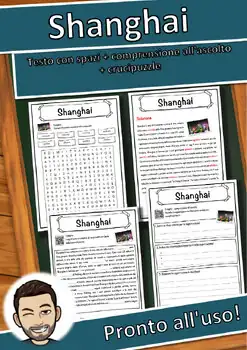
Shanghai – Italian Reading Comprehension Worksheet (Scheda): Cloze & Listening
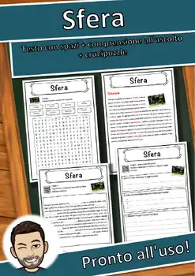
Sfera – Italian Reading Comprehension Worksheet (Scheda): Cloze & Listening
Seychellen – Italian Reading Comprehension Worksheet (Scheda): Cloze & Listening
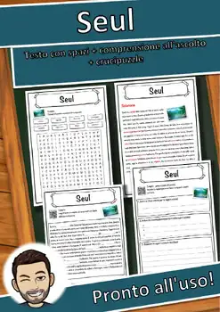
Seul – Italian Reading Comprehension Worksheet (Scheda): Cloze & Listening
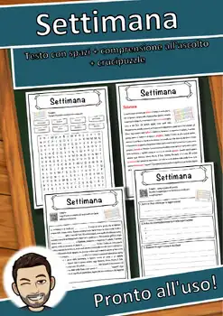
Settimana – Italian Reading Comprehension Worksheet (Scheda): Cloze & Listening
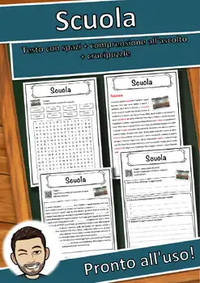
Scuola – Italian Reading Comprehension Worksheet (Scheda): Cloze & Listening
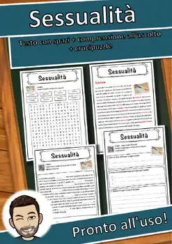
Sessualità – Italian Reading Comprehension Worksheet (Scheda): Cloze & Listening
Servizio – Italian Reading Comprehension Worksheet (Scheda): Cloze & Listening
Serpentes – Italian Reading Comprehension Worksheet (Scheda): Cloze & Listening
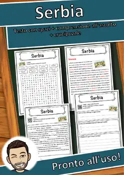
Serbia – Italian Reading Comprehension Worksheet (Scheda): Cloze & Listening
Senzatetto – Italian Reading Comprehension Worksheet (Scheda): Cloze & Listening
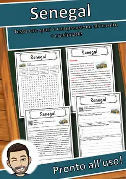
Senegal – Italian Reading Comprehension Worksheet (Scheda): Cloze & Listening
Semaforo – Italian Reading Comprehension Worksheet (Scheda): Cloze & Listening
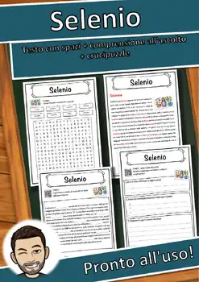
Selenio – Italian Reading Comprehension Worksheet (Scheda): Cloze & Listening
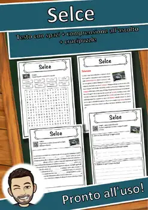
Selce – Italian Reading Comprehension Worksheet (Scheda): Cloze & Listening
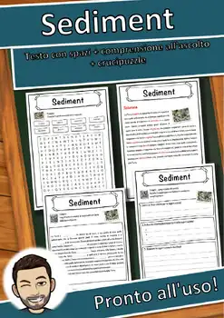
Sediment – Italian Reading Comprehension Worksheet (Scheda): Cloze & Listening
Secondo – Italian Reading Comprehension Worksheet (Scheda): Cloze & Listening

Secolo – Italian Reading Comprehension Worksheet (Scheda): Cloze & Listening
Seaborgio – Italian Reading Comprehension Worksheet (Scheda): Cloze & Listening
Scrittore – Italian Reading Comprehension Worksheet (Scheda): Cloze & Listening
No resources found – try a different search term or filter.